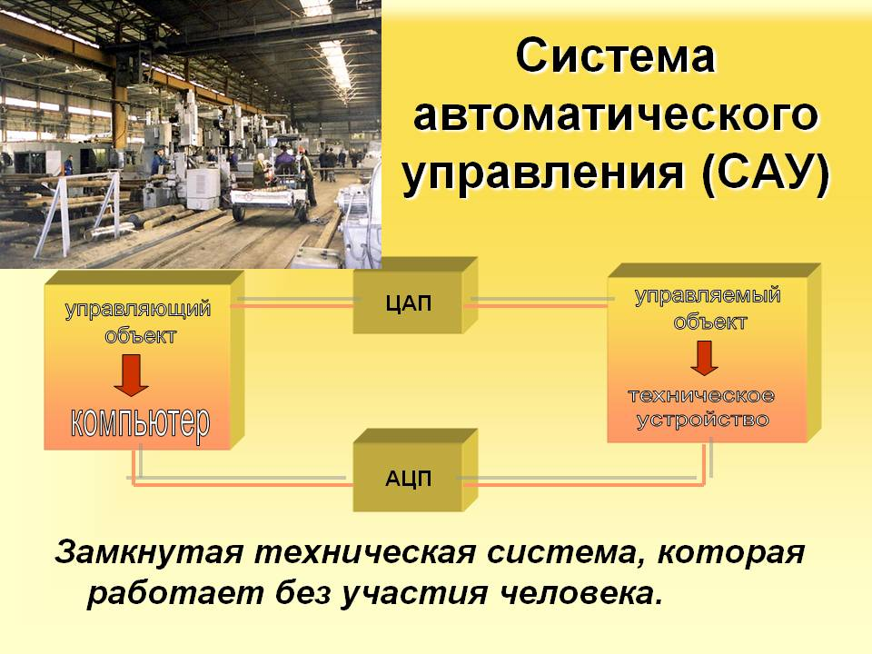
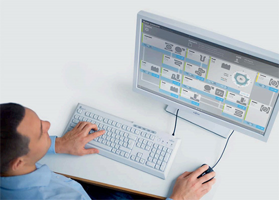

Асу и Сау
Автоматизированная система управления технологическим процессом или АСУ ТП — решает задачи оперативного управления и контроля техническими объектами в промышленности, энергетике, на транспорте. Автоматизированная система управления производством (АСУ П) — решает задачи организации производства, включая основные производственные процессы, входящую и исходящую логистику. Осуществляет краткосрочное планирование выпуска с учётом производственных мощностей, анализ качества продукции, моделирование производственного процесса. Для решения этих задач применяются MIS и MES-системы, а также LIMS-системы.
Примеры: Автоматизированная система управления уличным освещением («АСУ УО») — предназначена для организации автоматизации централизованного управления уличным освещением. Автоматизированная система управления наружного освещения («АСУНО») — предназначена для организации автоматизации централизованного управления наружным освещением. Автоматизированная система управления дорожным движением или АСУ ДД — предназначена для управления транспортных средств и пешеходных потоков на дорожной сети города или автомагистрали Автоматизированная система управления предприятием или АСУП — для решения этих задач применяются MRP, MRP II и ERP-системы.
В случае, если предприятием является учебное заведение, применяются системы управления обучением.
Примеры: «Система управления гостиницей». Наряду с этим названием употребляется PMS Property Management System «Автоматизированная система управления операционным риском» - это программное обеспечение, содержащее комплекс средств, необходимых для решения задач управления операционными рисками предприятий: от сбора данных до предоставления отчетности и построения прогнозов.
Объект управления — изменение состояния объекта в соответствии с заданным законом управления. Такое изменение происходит в результате внешних факторов, например вследствие управляющих или возмущающих воздействий.
А) Системы автоматического регулирования Системы автоматической стабилизации. Выходное значение поддерживается на постоянном уровне (заданное значение — константа). Отклонения возникают за счёт возмущений и при включении. Системы программного регулирования. Заданное значение изменяется по заранее заданному программному закону f. Наряду с ошибками, встречающимися в системах автоматического регулирования, здесь также имеют место ошибки от инерционности регулятора. Следящие системы. Входное воздействие неизвестно. Оно определяется только в процессе функционирования системы. Ошибки очень сильно зависят от вида функции f(t). Б) Системы экстремального регулирования Способны поддерживать экстремальное значение некоторого критерия (например минимальное или максимальное), характеризующего качество функционирования объекта. Критерием качества, который обычно называют целевой функцией, показателем экстремума или экстремальной характеристикой, может быть либо непосредственно измеряемая физическая величина (например, температура, ток, напряжение, влажность, давление), либо КПД, производительность и др.
Выделяют: Системы с экстремальным регулятором релейного действия. Универсальный экстремальный регулятор должен быть хорошо масштабируемым устройством, способным исполнять большое количество вычислений в соответствии с различными методами. Сигнум-регулятор используется как аналоговый анализатор качества, однозначно характеризующий лишь один подстраиваемый параметр систем. Он состоит из двух последовательно включенных устройств: Сигнум-реле (D-триггер) и исполнительный двигатель (интегратор). Экстремальные системы с безинерционным объектом Экстремальные системы с инерционным объектом Экстремальные системы с плавающей характеристикой. Используется в случае, когда экстремум меняется непредсказуемым или сложно идентифицируемым образом. Системы с синхронным детектором (экстремальные системы непрерывного действия). В прямом канале имеется дифференцирующее звено, не пропускающее постоянную составляющую. Удалить или зашунтировать по каким-либо причинам это звено невозможно или неприменимо. Для обеспечения работоспособности системы используется модуляция задающего воздействия и кодирование сигнала в прямом канале, а после дифференцирующего звена устанавливают синхронный детектор фазы.
В) Адаптивные системы автоматического управления Служат для обеспечения желаемого качества процесса при широком диапазоне изменения характеристик объектов управления и возмущений.

Основное отличие систем автоматического управления (САУ) от АСУ состоит в том,что человек в АСУ не только контролирует работу автоматов, но и активно участвует в самом процессе управления: оценивает результаты обработки оперативной информации; принимает решения по координированию работы отдельным звеньев АСУ; берёт на себя оперативное управление при отказах или сбоях в системе обработки данных; на основе результатов проведённых измерений выбирает методику научных изысканий и определяет направление и последовательность проведения экспериментов; решает конкретные задачи при подборе кадров, аттестации работников, повышении их квалификации и т. п. Различают АСУ объектами (технологическими процессами — АСУТП, предприятием — АСУП, отраслью — ОАСУ) и функционально автоматизированные системы, например: проектирования (САПР), плановых расчётов, материально-технического снабжения и др.
группа решений технических и программных средств, предназначенных для автоматизации управления технологическим оборудованием на промышленных предприятиях. Может иметь связь с более общей автоматизированной системой управления предприятием[1] (АСУП). Под АСУ ТП обычно понимается целостное решение, обеспечивающее автоматизацию основных операций технологического процесса на производстве в целом или каком-то его участке, выпускающем относительно завершённое изделие. Понятие «автоматизированный», в отличие от понятия «автоматический», подчёркивает необходимость участия человека в отдельных операциях, как в целях сохранения контроля над процессом, так и в связи со сложностью или нецелесообразностью автоматизации отдельных операций. Составными частями АСУ ТП могут быть отдельные системы автоматического управления (САУ) и автоматизированные устройства, связанные в единый комплекс. Такие как системы диспетчерского управления и сбора данных (SCADA), распределенные системы управления (DCS), системы противоаварийной защиты (ESD) и другие более мелкие системы управления (например, системы на программируемых логических контроллерах[2] (PLC)). Как правило, АСУ ТП имеет единую систему операторского управления технологическим процессом в виде одного или нескольких пультов управления, средства обработки и архивирования информации о ходе процесса, типовые элементы автоматики: датчики, устройства управления, исполнительные устройства

В развитии АСУ ТП наблюдалось последовательное усложнение задач, стоящих перед системами управления от управления отдельными установками и параметрами, к автоматизации процессом в целом, автоматизации систем управления. Использование современных АСУ ТП позволяет не только эффективно осуществлять управление и контроль в производственной сфере, но и частично исключить влияние человеческого фактора в управлении, что позволяет избежать ошибок. В настоящее время актуальными являются вопросы повышения автономности АСУ ТП, перераспределения функций в направлении увеличения нагрузки в принятии решений на АСУ. Актуальными в данном случае выступают вопросы развития интеллектуальной составляющей АСУ ТП в направлении создания алгоритмов реагирования в режиме реального времени на возникающие критические ситуации. Активное использование в АСУ ТП беспроводных технологий вызывает повышенные требования к обеспечению безопасности от несанкционированного доступа.[5